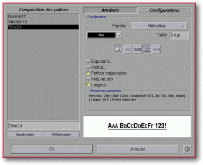
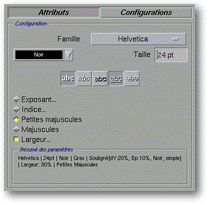
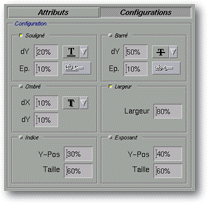
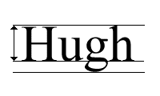

<!-- Documentation Xclamation (c)1994-2000 AXENE contact axene@axene.org>
<html>

<head>
<title>Composition des styles</title>
</head>

<body BGCOLOR="#FFFFFF" BACKGROUND="Images/back.gif" TEXT="#000000">

<p ALIGN="right">  </p>

<p><br>
<br>
Cette boîte de dialogue permet de définir les styles des polices de caractères
utilisées dans l'affichage des textes. Elle permet d'associer un nom à un style défini
par ses paramètres. <br>
<br>
</p>

<hr>

<p align="center"><br>
<i><small>Photo d'écran&nbsp;: Boîte de composition des polices</small></i> <br>
<br>
<br>
</p>

<hr>

<p><br>
</p>

<h3>Partie de gauche de la boîte de dialogue&nbsp;:</h3>

<ul>
  <li><a NAME="style_list">La <b>liste des styles</b> affiche les styles déjà définis.
    Lorsque l'on sélectionne un des styles de la liste, ses caractéristiques apparaissent à
    droite. Il est possible d'en sélectionner plusieurs grâce à l'utilisation de la touche
    Ctrl. Il existe des styles prédéfinis dans les </a><a HREF="ConfigStyle.html">fichiers
    de configuration</a>. <br>
    &nbsp;</li>
  <li><a NAME="style_name">Le champ texte situé sous la liste permet de <b>modifier le nom du
    style</b> sélectionné. </a><br>
    &nbsp;</li>
  <li><a NAME="new_style">Le bouton <i>&quot;Ajouter Police&quot;</i> permet de <b>créer un
    nouveau style</b>. Celui-ci aura par défaut les mêmes caractéristiques que le style
    sélectionné et le même nom augmenté d'un numéro. </a><br>
    &nbsp;</li>
  <li><a NAME="delete_style">Le bouton <i>&quot;Détruire Police&quot;</i> permet de <b>détruire
    un style</b>. Il est impossible de détruire un style utilisé dans l'application ou un
    style défini dans les </a><a HREF="ConfigStyle.html">fichiers de configuration</a> avec
    le paramètre <a HREF="ConfigStyle.html#lock">\LOCK</a>. </li>
</ul>

<p><br>
</p>

<h3>Partie droite de la boîte de dialogue&nbsp;: </h3>

<ul>
  <li><a NAME="button_bar">Les deux boutons <i>&quot;Attributs&quot;</i> et <i>&quot;Configuration&quot;</i>
    permettent de <b>faire varier le contenu de la section <i>&quot;Configuration&quot;</i></b>.
    Le bouton <i>&quot;Attributs&quot;</i> permet de choisir les caractéristiques générales
    du style, notamment l'affectation des attributs (soulignement, ombré...). Le bouton <i>&quot;Configuration&quot;</i>
    permet de changer précisemment les paramètres des attributs. </a><br>
    &nbsp;</li>
  <li><a NAME="configuration_section">La section <i>&quot;Configuration&quot;</i> peut prendre
    les deux formes suivantes&nbsp;:</a> <br>
    &nbsp;<ul>
      <li><a HREF="#general_attributes">Attributs généraux du style</a> si le bouton <i>&quot;Attributs&quot;</i>
        est sélectionné. <br>
        &nbsp;</li>
      <li><a HREF="#detailed_configuration">Configuration détaillée des attributs</a> si le
        bouton <i>&quot;Configuration&quot;</i> est sélectionné. <br>
        &nbsp;</li>
    </ul>
  </li>
  <li><a NAME="preview_area">La zone témoin montre à tout instant l'apparence du style tel
    que défini. </a></li>
</ul>

<p><br>
</p>

<h3>Partie inférieure de la boîte de dialogue&nbsp;: </h3>

<ul>
  <li><a NAME="button_ok"><i>&quot;Ok&quot;</i> permet d'<b>accepter toutes les modifications</b>
    apportées à la liste des styles et ferme la boîte. Les textes utilisant des styles
    modifiés seront mis à jour automatiquement. </a><br>
    &nbsp;</li>
  <li><a NAME="button_cancel"><i>&quot;Annuler&quot;</i> <b>annule toutes les opérations</b>
    sur la liste des styles et ferme la boîte. <br>
    </a></li>
</ul>

<p><br>
</p>

<hr>

<h2 align="center"><a NAME="general_attributes">Section <i>&quot;Configuration&quot;</i>&nbsp;:
Attributs généraux.<br>
</a></h2>

<p align="center"><br>
<i><small>Photo d'écran&nbsp;: Section &quot;Configuration&quot;. </small></i></p>

<p><br>
</p>

<h3>La section <i>&quot;Configuration&quot;</i>, sous cette forme, est composée, de haut
en bas, par&nbsp;:</h3>

<ul>
  <li><a NAME="font_list">la liste déroulante <i>&quot;Famille&quot;</i> permet de <b>choisir
    la famille de police de caractères</b>. La liste proposée est obtenue à partir des </a><a HREF="ConfigFont.html">fichiers de configuration</a>. <br>
    &nbsp;</li>
  <li><a NAME="font_color_list">la liste de couleurs permet de <b>choisir la couleur de la
    police de caractères</b>. La liste des couleurs est définie grâce à la boîte de
    dialogue </a><a HREF="Box_Color.html">'Préparation des couleurs'</a>. <br>
    &nbsp;</li>
  <li><a NAME="font_size_textfield">le champ texte <i>&quot;Taille&quot;</i> permet de <b>définir
    la taille de la police de caractères</b>. Cette taille correspond à la hauteur de la
    police, sa valeur est exprimée en points typographiques et doit être comprise entre
    1(pt) et 1000(pt). </a><br>
    &nbsp;</li>
  <li><a NAME="font_icon_bar">la barre horizontale d'icônes permet d'<b>affecter des
    attributs à la police de caractères</b>. Les boutons icônes sont les suivants&nbsp;: </a><br>
    &nbsp;<ul>
      <li> <a NAME="icon_bold">le premier bouton icône permet de <b>passer
        la police de caractères en gras</b>. Si la famille de police sélectionnée ne comporte
        pas de police en gras, ce bouton est grisé. </a><br>
        &nbsp;</li>
      <li> <a NAME="icon_italic">le second bouton icône permet de <b>passer
        la police de caractères en italique</b>. Si la famille de police sélectionnée ne
        comporte pas de police italique, ce bouton est grisé. </a><br>
        &nbsp;</li>
      <li> <a NAME="icon_shadow">le troisième bouton icône permet
        d'<b>ombrer la police de caractères</b>. Il est possible de modifier en détail la
        configuration de l'ombré à partir de la </a><a HREF="#shadow_section">section <i>&quot;Configuration
        détaillée&quot;</i></a>. <br>
        &nbsp;</li>
      <li> <a NAME="icon_underline">le quatrième bouton icône
        permet de <b>souligner la police de caractères</b>. Il est possible de modifier en
        détail la configuration du soulignement à partir de la </a><a HREF="#underline_section">section
        <i>&quot;Configuration détaillée&quot;</i></a>. <br>
        &nbsp;</li>
      <li> <a NAME="icon_strikeout">le dernier bouton icône
        permet de <b>barrer la police de caractères</b>. Il est possible de modifier en détail
        la configuration de la biffure à partir de la </a><a HREF="#strikeout_section">section <i>&quot;Configuration
        détaillée&quot;</i></a>. <br>
        &nbsp;</li>
    </ul>
  </li>
  <li><a NAME="button_superscript">le bouton <i>&quot;Exposant...&quot;</i> permet de <b>passer
    la police de caractères sous forme d'exposant </b>(&nbsp;<sup>exposant</sup>&nbsp;). Les
    attributs <i>&quot;Exposant&quot;</i> et <i>&quot;Indice&quot;</i> sont mutuellement
    exclusifs. Il est possible de modifier en détail la configuration de l'exposant à partir
    de la </a><a HREF="#superscript_section">section <i>&quot;Configuration détaillée&quot;</i></a>.
    <br>
    &nbsp;</li>
  <li><a NAME="button_subscript">le bouton <i>&quot;Indice...&quot;</i> permet de <b>passer la
    police de caractères sous forme d'indice </b>(&nbsp;<sub>indice</sub>&nbsp;). Les
    attributs <i>&quot;Exposant&quot;</i> et <i>&quot;Indice&quot;</i> sont mutuellement
    exclusifs. Il est possible de modifier en détail la configuration de l'indice à partir
    de la </a><a HREF="#subscript_section">section <i>&quot;Configuration détaillée&quot;</i></a>.
    <br>
    &nbsp;</li>
  <li><a NAME="button_smallcaps">le bouton <i>&quot;Petites majuscules&quot;</i> permet de <b>changer
    les minuscules de la police de caractères en petites majuscules</b>. Les minuscules
    seront affichées comme des majuscules mais en gardant leur taille ( hauteur ). Les
    attributs <i>&quot;Petites majuscules&quot;</i> et <i>&quot;Majuscules&quot;</i> sont
    mutuellement exclusifs. </a><br>
    &nbsp;</li>
  <li><a NAME="button_bigcaps">le bouton &quot;Majuscules&quot; permet de <b>changer les
    minuscules de la police de caractères en majuscules</b>. Les attributs <i>&quot;Petites
    majuscules&quot;</i> et <i>&quot;Majuscules&quot;</i> sont mutuellement exclusifs. </a><br>
    &nbsp;</li>
  <li><a NAME="button_width">le bouton &quot;Largeur...&quot; permet d'<b>élargir ou de
    rétrécir les caractères de la police horizontalement</b>. La sélection du facteur
    d'expansion horizontale s'effectue à partir de la </a><a HREF="#width_section">section <i>&quot;Configuration
    détaillée&quot;</i></a>. <br>
    &nbsp;</li>
  <li><a NAME="summary_section">la section <i>&quot;Résumé des paramètres&quot;</i> montre
    sous forme synthétique l'ensemble des caractéristiques et attributs du style
    sélectionné. </a></li>
</ul>

<p><br>
</p>

<hr>

<h2 align="center"><a NAME="detailed_configuration">Section <i>&quot;Configuration&quot;&nbsp;:</i>
Configuration détaillée. </a></h2>

<p align="center"><br>
<small><i>Photo d'écran&nbsp;: Section &quot;Configuration&quot;. </i></small></p>

<p><br>
</p>

<p>La section <i>&quot;Configuration&quot;</i> sous cette forme permet d'affiner la
configuration de certains attributs du style sélectionné. Cette section est divisée en
six sous-sections avec une sous-section par attribut. Chacune d'entre elles comporte un
bouton devant le titre qui permet d'affecter au style l'attribut correspondant. Lorsque
l'on modifie une valeur de l'une de ces sous-sections, le bouton du titre se sélectionne
automatiquement afin de pouvoir observer le changement dans la zone témoin. </p>

<p>De nombreux paramètres correspondent à une fraction de la hauteur de police (espace
entre la ligne de base et la ligne de haute côte). </p>

<p align="center"> </p>

<h3>La section &quot;Configuration&quot; est composée par&nbsp;: </h3>

<ul>
  <li><a NAME="underline_section">la section <i>&quot;Souligné&quot;</i> concerne la
    configuration de l'attribut 'Souligné'. Elle est composé par&nbsp;: </a><br>
    &nbsp;<ul>
      <li>le champ texte <i>&quot;dY&quot;</i> permet de <b>choisir la position verticale de la
        barre de soulignement</b>. La valeur est exprimée en pourcentage de la hauteur de la
        police et doit être comprise entre 0(%) et 100(%). Une valeur de 0% correspond à une
        barre de soulignement au niveau de la ligne de base. <br>
        &nbsp;</li>
      <li>la liste des couleurs permet de <b>choisir la couleur de la barre de soulignement</b>. <br>
        &nbsp;</li>
      <li>le champ texte <i>&quot;Ep&quot;</i> permet de <b>choisir l'épaisseur de la barre de
        soulignement</b>. La valeur est exprimée en pourcentage de la hauteur de la police et
        doit être comprise entre 1(%) et 20(%). <br>
        &nbsp;</li>
      <li>la liste de style de trait permet de <b>choisir le style de la barre de soulignement</b>.
        Il s'agit d'une combinaison d'un soulignement simple, double ou triple et du soulignement
        ou non des espaces. <br>
        &nbsp;</li>
    </ul>
  </li>
  <li><a NAME="strikeout_section">la section <i>&quot;Barré&quot;</i> concerne la
    configuration de l'attribut 'Barré'. Elle est composée par&nbsp;: </a><br>
    &nbsp;<ul>
      <li>le champ texte <i>&quot;dY&quot;</i> permet de <b>choisir la position verticale de la
        barre de biffure. </b>La valeur est exprimée en pourcentage de la hauteur de la police et
        doit être comprise entre 0(%) et 100(%). Une valeur de 0% correspond à une biffure au
        niveau de la ligne de base, une valeur de 100% à une biffure au niveau de la ligne de
        haute côte. <br>
        &nbsp;</li>
      <li>la liste des couleurs permet de <b>choisir la couleur de la barre de biffure</b>. <br>
        &nbsp;</li>
      <li>le champ texte <i>&quot;Ep&quot;</i> permet de <b>choisir l'épaisseur de la barre de
        biffure</b>. La valeur est exprimée en pourcentage de la hauteur de la police et doit
        être comprise entre 1(%) et 20(%). <br>
        &nbsp;</li>
      <li>la liste de style de trait permet de <b>choisir le style de la barre de biffure</b>. Il
        s'agit d'une combinaison d'une biffure simple, double ou triple et du barré ou non des
        espaces. <br>
        &nbsp;</li>
    </ul>
  </li>
  <li><a NAME="shadow_section">la section <i>&quot;Ombré&quot;</i> concerne la configuration
    de l'attribut 'Ombrage'. Elle est composée par&nbsp;:</a><br>
    &nbsp;<ul>
      <li>le champ texte &quot;dX&quot; permet de <b>choisir le décalage horizontal de l'ombré</b>.
        La valeur est exprimée en fraction de la hauteur de la police sous forme de pourcentage
        compris entre -50(%) et 50(%). Une valeur de 0% correspond à aucun décalage, une valeur
        négative correspond à un décalage de l'ombré vers la gauche et une valeur positive
        correspond à un décalage de l'ombré vers la droite. <br>
        &nbsp;</li>
      <li>le champ texte &quot;dY&quot; permet de <b>choisir le décalage vertical de l'ombré</b>.
        La valeur est exprimée en fraction de la hauteur de la police sous forme de pourcentage
        compris entre -50(%) et 50(%). Une valeur de 0% correspond à aucun décalage, une valeur
        négative correspond à un décalage de l'ombré vers le haut et une valeur positive
        correspond à un décalage de l'ombré vers le bas. <br>
        &nbsp;</li>
      <li>la liste des couleurs permet de <b>choisir la couleur de l'ombre de la police.</b> <br>
        &nbsp;</li>
    </ul>
  </li>
  <li><a NAME="width_section">la section <i>&quot;Largeur&quot;</i> concerne la configuration
    de l'attribut 'Largeur'. Elle est composée par&nbsp;:</a><br>
    &nbsp;<ul>
      <li>le champ texte <i>&quot;Largeur&quot;</i> permet de <b>définir le facteur d'expansion
        horizontal de la police de caractères</b>. Ce facteur est exprimé en pourcentage et doit
        être compris entre 1(%) et 1000(%). Si la valeur est de 100(%), la police est de largeur
        normale ; si la valeur est de 50(%), la police est deux fois plus étroite et si la valeur
        est de 200(%) la police est deux fois plus large. <br>
        &nbsp;</li>
    </ul>
  </li>
  <li><a NAME="subscript_section">la section <i>&quot;Indice&quot;</i> concerne la
    configuration de l'attribut 'Indice'. Elle est composée par&nbsp;:</a><br>
    &nbsp;<ul>
      <li>le champ texte &quot;Y-Pos&quot; permet de <b>choisir le décalage vers le bas de la
        police</b>. La valeur est exprimée en fraction de la hauteur de la police sous forme de
        pourcentage compris entre 0(%) et 100(%). Une valeur de 0% correspond à aucun décalage
        et une valeur de 50% correspond à un décalage vers le bas de la ligne de base de la
        moitié de la hauteur de la police. <br>
        &nbsp;</li>
      <li>le champ texte &quot;Taille&quot; permet de <b>choisir le facteur de réduction de la
        police</b>. Cette valeur correspond à la fraction de la taille normale de la police,
        exprimée en pourcentage et devant être comprise entre 10(%) et 100(%). Une valeur de
        100% correspond à aucune réduction et une valeur de 50% pour une police de 12pt
        correspond à une taille de police de 6pt pour l'attribut indice. <br>
        &nbsp;</li>
    </ul>
  </li>
  <li><a NAME="superscript_section">la section <i>&quot;Exposant&quot;</i> concerne la
    configuration de l'attribut 'Exposant'. Elle est composé par&nbsp;:</a><br>
    &nbsp;<ul>
      <li>le champ texte &quot;Y-Pos&quot; permet de <b>choisir le décalage vers le haut de la
        police</b>. La valeur est exprimée en fraction de la hauteur de la police sous forme de
        pourcentage compris entre 0(%) et 100(%). Une valeur de 0% correspond à pas de décalage
        et une valeur de 50% correspond à un décalage vers le haut de la ligne de base de la
        moitié de la hauteur de la police. <br>
        &nbsp;</li>
      <li>le champ texte &quot;Taille&quot; permet de <b>choisir le facteur de réduction de la
        police</b>. Cette valeur correspond à la fraction de la taille normale de la police,
        exprimée en pourcentage et devant être comprise entre 10(%) et 100(%). Une valeur de
        100% correspond à pas de réduction et une valeur de 50% pour une police de 12pt
        correspond à une taille de police de 6pt pour l'attribut exposant. </li>
    </ul>
  </li>
</ul>

<p><br>
</p>

<hr>

<p ALIGN="right"> </p>
</body>
</html>
